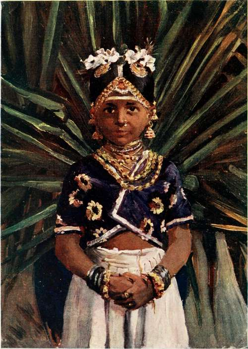

Chapter III. The People
Description
This section is from the book "Ceylon", by Alfred Clark. Also available from Amazon: Ceylon.
Chapter III. The People
The population of the whole of Ceylon is a little more than half that of London. It consists mainly of two races, the Singhalese and the Tamils, who are entirely different in appearance, costume, language, religion, and customs. The former, who are by far the more numerous, claim as their ancestors the original conquerors of the island, who followed the outlaw Wijayo from Northern India, and the latter are the descendants of the adventurers from Southern India who so often made raiding incursions into the island. The Singhalese occupy the southwestern and southern parts, and the Tamils the northern and eastern parts.
The inhabitants of the hills, called Kandians, are Singhalese, but are of a different type from their fellow-countrymen in the lowlands, and are superior busy life in the towns and villages which have sprung up in the valleys, and on the tea-estates which cover the hillsides. Railways penetrate to every part, roads radiate in all directions, and the wild beasts have practically disappeared.
To them in many respects. The vast majority of the people in the hills are, however, Tamil coolies, immigrants from South India, and employed on the tea-estates. The centre of the island and the districts round the bases of the hills are inhabited by a miserable jungle people—some Singhalese and some Tamils. In the forests on the eastern side are to be found a few hundred Veddahs, all now left of the ancient aborigines, and doomed to extinction before long, chiefly by intermarriage with Singhalese and Tamils.
In all the towns are to be found numbers of Moormen, so called by the Portuguese. Their forefathers were probably Arab traders, who settled in the country some hundreds of years ago. There are also a number of Malays, whose fathers and grandfathers were brought to the island from the Straits Settlements, as soldiers, in the early days of the British occupation. Descendants of Portuguese and Dutch officials and soldiers who married native wives are numerous. Those with Dutch blood in their veins are usually called Burghers, but prefer to describe themselves as Ceylonese. They are a very superior class ; most of the doctors, lawyers, and subordinate Civil Servants are members of it.
A child bride. Page 2.
Though the Singhalese derive their name from singha, a lion, they are a most unwarlike race. The features, costume, and coiffure of the men in the coast districts accentuate their effeminate appearance. They wear loin-cloths, called cowboys, usually white, descending almost to their feet, and looking something like petticoats, and have long hair, often hanging loose over their shoulders, but generally twisted into a knot behind the head, with a round tortoiseshell comb, and sometimes an upright one in addition, stuck into it. The women have a most unbecoming dress, partly copied from the Portuguese, consisting of a tightly wound loin-cloth and a loose jacket with tight sleeves and puffed shoulders.
Most of the Singhalese in the interior support themselves by rice cultivation and coconut growing. It is only within recent years that they have been induced to accept work on the tea or other estates as labourers. In the coast districts they are chiefly traders and artificers, being especially skilful in carpentry and wood-carving.
Their language is not an easy one to acquire, and there are two forms of it, the literary and the colloquial, the former being full of Sanscrit and Pali words. Singhalese is rich in honorifics, it being said that there are eleven different forms in which hosts can dismiss their visitors, according to their rank in relation to their own.
Many of the low-country Singhalese have high-sounding Portuguese names in addition to their village names, such as Don Sebastian Appu Vidahnelage, and they have adopted into their language a good many Portuguese and Dutch words.
The Tamils of the northern and eastern provinces are on the whole a finer and more manly race than the Singhalese. Their skins are of a darker shade of brown, and their costume is more tasteful. The men shave their heads, leaving only a long scalp-lock, which they tie into a knot and wear at the back of the head or over the ear, according as they are married men or bachelors. The dress of the women is often of bright colours.
Rice cultivation is the chief occupation of the Tamils of the country, but great numbers are also employed in growing tobacco, and in utilizing the products of the palmyra palm. Hundreds of them are employed as clerks, not only in Government offices, but by merchants and planters.
The Moormen are, both physically and mentally, a fine race. They are commonly called by the nickname Kdka, or crows, by other natives, and Tambies by the Europeans. As they are very energetic and enterprising, a large part of the trade of the country is in their hands, the majority of them being shopkeepers, jewellers, masons, and pedlars. Their distinguishing features are their shaven heads and curious hats. These last are of two kinds—one made of coloured plait, brimless, and shaped like a huge thimble, and the other a white cloth skullcap, which seems to be glued to the bare brown head.
They do not shut up their wives and daughters as do other Mohammedans, but Moor women, when going through the streets, often cover their faces, especially the old and ugly. They can scarcely be said to be always dressed in white, as their garments are generally of a light brown tint, from dirt.
Love of ornament is common to all Eastern nations, but is less pronounced among the Singhalese than most others. The women wear gold and silver hairpins and necklaces, and little more in the way of jewellery, while many of their Tamil fellow-countrywomen wear nose-rings and toe-rings, in addition to anklets and bangles. A peculiarity of Moor women is that their ears are often loaded each with half a dozen silver filigree earrings. Native women often smear their faces with powdered turmeric, making them of a bright yellow colour, anything but pleasing to European eyes. Wealthy Tamil men and Moormen may often be seen with golden armlets above their elbows, containing charms to protect them from evil.
Native children of all races are charming little creatures, bronze-tinted, dark-eyed, and merry-faced. Fat babies, innocent of clothing except, perhaps, silver chains round their podgy waists, sprawl about in the sun everywhere, or are carried on the hip by little sisters only two or three years older than themselves. The children seem to have few refrular games, but amuse themselves by " pretending," as other little ones do all over the world. The girls begin to help their mothers in domestic work at a very tender age, and the boys are set to tend the buffaloes and cattle, and to watch in the fields almost as soon as they can toddle.
The vast majority of the people live in window-less, mud-walled huts, thatched with plaited coconut leaves or straw. Under their own Kings none but the nobles were allowed to live in tiled or whitewashed houses. Each hut is usually embowered in a little garden containing a few coconut-trees, clumps of broad-leaved plantain and sugar-cane, with a few coffee - bushes, papayas, custard - apples, pineapples, and other fruit - trees and plants scattered about. Many have pumpkin vines growing over the roofs.
The principal food of the people consists of rice, grown by themselves in the fields adjoining their villages. It is always partaken of in conjunction with curries of various sorts, and all hot. Of meat they eat little, but in the districts near the sea fish is largely consumed. Milk is not much drunk, principally because of the small quantity given by the native cows, which are not much larger than English calves, two quarts a day being considered a good yield. Much of the milk is converted into curds.
Continue to: